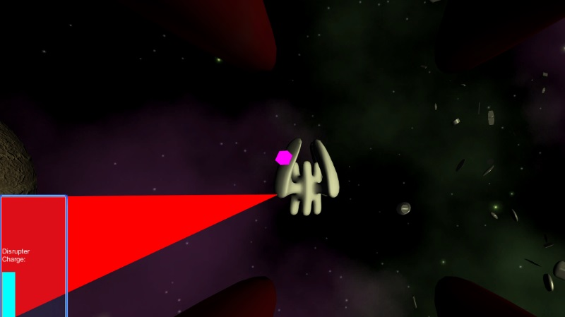

Undergraduate Thesis
The Path Home
Last Updated In February 2015
The Path Home puts you in command of a prototype star ship, the first of its kind to include a warp engine. You ship is lost in space, and your objective is to find The Path Home. On your way you will encounter new friends and enemies, trade resources, and discover new knowledge to aid in your journey.


